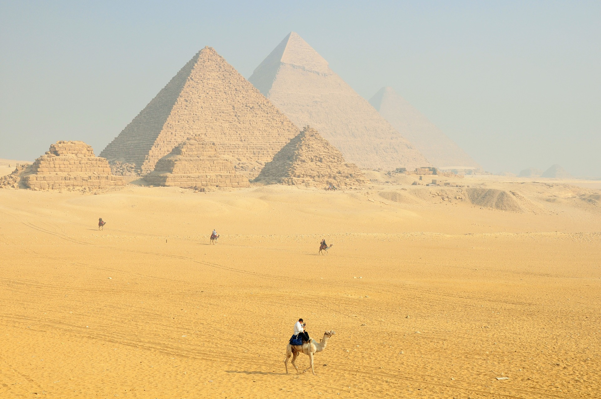
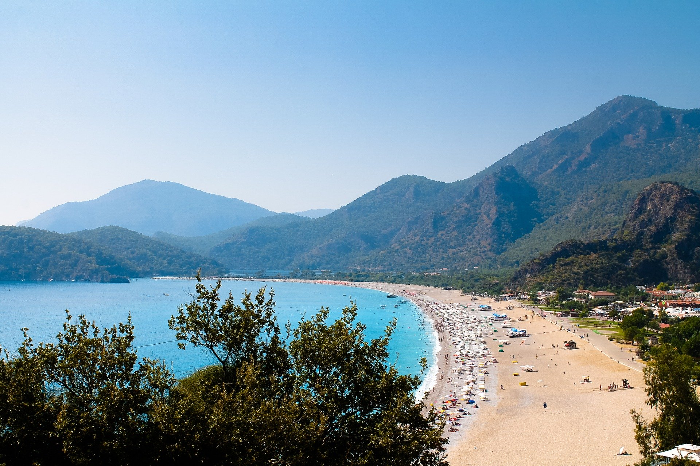
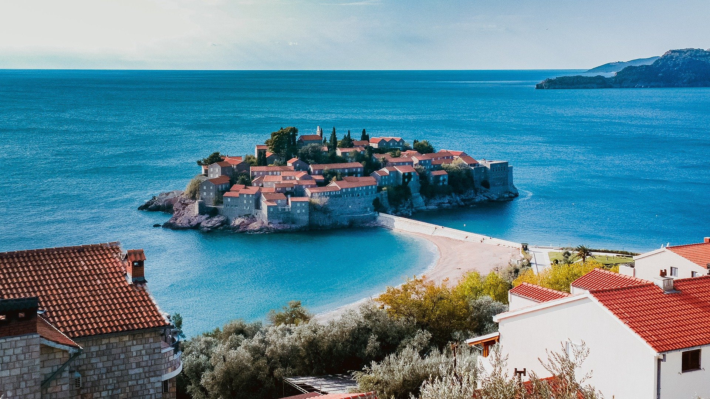

Египет
Египет — отличное место для отдыха всей семьей: можно и в море поплавать, и на древности
посмотреть,
и на рыбок у коралловых рифов полюбоваться.
Первое и единственное из сохранившихся Семи чудес света находится в Египте, это знаменитые пирамиды.
На плато Гиза, которое раньше было отдельным городом, а теперь уже является окраиной Каира,
раскинулись три огромные пирамиды и сфинкс. Съездить на экскурсию в Каир можно и из Хургады и из
Шарм-эль-Шейха: время в пути одинаковое, примерно 6 часов.
Go

Турция
Турция — наиболее доступный вариант отдыха после отечественных курортов, при этом уровень
сервиса
выгодно отличается. Туристическая индустрия страны прославилась форматом «все включено», который
позволяет туристам беззаботно наслаждаться отпуском, заплатив всего один раз.
Отдых на турецких курортах подойдет и парам, и семьям с детьми, и старшему поколению. Молодежь
оценит ночные тусовки, гурманы — пикантную турецкую кухню и сладости, любители шоппинга —
ассортимент качественных товаров.
Go

Черногория
Как отдохнуть в Европе без визы и куда недорого съездить на море за границу? Ответ на оба
вопроса ––
Черногория. Побываете здесь разок –– будете возвращаться снова и снова. Чтобы позагорать у чистого
моря на золотом песке, оторваться на фестивале SEA DANCE и понырять с маской у полуострова Луштица.
Чтобы полюбоваться Скадарским озером, дворцами и замками Пераста и скальным монастырем Острог. Чтобы
поправить здоровье на грязевом курорте Игало, полакомиться буреками с хреновками и запить все это
балканским бренди –– ракией. Проверено: фотографии летнего отдыха в Черногории согревают даже самыми
морозными зимними вечерами.
Go